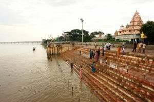
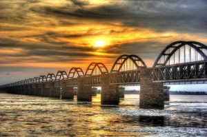
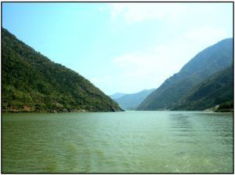
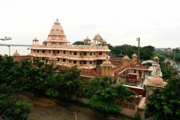
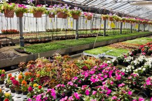

About District
East Godavari District which is the largest and the most populous district in the state
of Andhra Pradesh, was successively ruled by Mauryas, Sathavahanas, Vishnu Kundins,
Eastern Chalukyas, Cholas, Kaktiyas, Musunuri Chieftians, Kondaveeti Reddy Kings, Gajapathi
s, Kutubshahis and then by the British. It was under the Raj, on April 15, 1925, East
Godavari District was formed as per G.O.No.502. East Godavari is the richest district of
the state, in terms of GDP, is both the cultural and tourist hub of the state.
GODAVARI
River Godavari starts as a trickle at Nasik in Maharashtra.
If flows through the States of Marashtra and Andhra Pradesh Pradesh and becomes
mighty and majestic at Rajahmundry. It is the largest river in South India. Godavari,
with its several Tributaries, occupies 1/10th of the country. Its total length is 1450KMs.
In Andhra Pradesh, it flows to an extent of 927 kms.

Legend has it that the seven sages Gowthama, Vasista, Atri, Viswamitra, Kowsika. Bharadwaja and Agasthya (known as Saptha Maharushulu), each tributary is named after the sage whobrought it. At present, Gowthami and Vasista alone are visible. At Rajahmundry is 4 kms wide and at Dowleswaram it is 7 kms wide.
River Godavari inspired Adikavi Nannayya (First poet in Telugu Language ) to undertake translation of Vyasa Mahabharata into Telugu from the Sanskrit original. It was not a mere translation. It was transcreation Nannayya very wisely borrowed the storyline and the ideas from the original and wrote in his own idiomatic way. But unfortunately he died after finishing 21/2 cantos (parvas), Yerrapragada completed the remaining parva closely following parvas in his won imitable style. This poetic trinity is held in high esteem by later poets. Scholar poet Srinadha also lived for many years at Rajahmundry.
The very sight of river Godavari makes one poetical and lyrical. Many imaginative directors like Bapu captured the beauty of Godavari on the celluloid.
A boat ride on the Godavari on a cool tranquil moonlit night is a thrilling and everlasting experience.
BEAUTIES OF GODAVARI

RJY1A thing of beauty is a joy for ever’ said Keats. We are all votaries of beauty. When we chance to see a beautiful woman of man, we long to see the comely face of figure again and again, there may bot be any and intention in it. We are that human beauty is evanescent. But not so the beauty of nature. No one knows the age of Godavari. If human beauty is ephemeral, the beauty of Godavari is eternal and unfading. One can sit on river bund on the green carpet provided by Nature, watch the swirling waters and enjoy the gentle cool breeze. Despite doing it daily, one is never tired of it. Many an innovative and imaginative film director successfully exploited the myriad beauties of Godavari and made a feast of it to the cine goers, yet none are a whit bored.
Pattiseema:
Pattiseema or Pattisam is an ancient and holy place . The Siva Temple is famous.
Mahanandeswaralayam – Ramayyapeta : Is at a distance of 3km from Pattisam.
Gandiposamma Temple : Matru Sree Gandi Posamma is the lpresiding Goddess here. Girijans believe that She will protect them.
Uma Chodeswaraswami Temple, Devipatnam dates back to 11th century, The surroundings of the temple provided and ideal setting for holding Garden dinners (Vana Bhojanam) during Karthik season.
Perantallpalli Vighneswara Alayam: You have to book a boat or launch to go this temple which is at a distance of 5o km from Rajahmundry.
Papi

PAPI HILLS
Shakespeare words “Nature is above art” are the manifested when one sees the hills first hand. The real beauty of the River Godavari Seems to lie between the Papi Hills. As you travel towards Papi Hills, you are immediately transported into another World which no poets’s words not artist’s strokes dares to capture, You have to experience it. That is why Shakesperare said ‘Nature is above Art,.
Papi Hills are at a distance of 110 KMs from Rajahmundry. A.P.Tourism Department proveds boat services. If you go once you would like to go again and again.
Godavari River
RAJAMAHENDRAVARAM (RAJAHMUNDRY)
Is an ancient town with a rich cultural and historical past. It is more than 1000 years old. It was, and continues to be, the cultural capital of Andhra Pradesh. It is also known as Rajahendri, Rajamahendrapuram and Rajamahendravara. Common people call it Rajamandram. Poet nannayya stated that there used to be a Rajamahendravaram. Common people call it Rajamandram. Poet Nannayya stated that there used to be a Rajamahendra Kavindra Samajam in his name.
Kandukuri Veerasalingam, a versatile genius and formidable social reformer, was born here. He was a pioneer writer of excellence. He wrote for the benefit of scholars and students alike. He had many firsts to his credit. Late C.R.Reddy, himself a brilliant scholar and poet, described veeresalingam as the “greatest Andhra of modern times’. He strove all his life for the amelioration of the miserable lot of widows and the downtrodden. He spent every second of his life, every rupee of his hard earnings and every ounce of his energy for the betterment of his fellowmen and women. His chair as well as the table s and books used by him are still preserved in the house were he lived and worked.

RJY2One should not miss to seeing Rallabandi Museum, Damerla Ramarao Art Gallery and Gowthami Library. Rallabandi Museum is situated near Godavari Bund. It has huge collection of 6984 books whent it was taken over by the Government of March 1, 1967.
Damerla Art Gallery, is home to many rare paintings by such great artists as Raja Ravi Varma, Damerla Rama Rao and many others. In the good old days, Kings and Zamindars patronized not only scholars and poets but also musicians, painters and dancers. Raja Ravi Varma of Kerala is an internationally renowned painter. His paintings are life like. Such is the power of the brush in the hands of an artist. Damerla Rama Rao is in the same line. He died young but many agree that there is no death for persons like him. Rama Rao lives in his paintings. They brought him undying fame.
Gowthami Library is the second biggest library in the State. Thousands of old and rare books are carefully preserved here. Madhura Kavi Nalam Krishna Rao established a Library in the name of Veeresalingam. Another Library was established in the name of Vasu Rayakavi. Both these Libraries were amalgamated in Gowthami Library in 1920.
Markandeya Swamy Temple is an ancient Siva temple. There are other famous temples in Rajahmundry.
The big Mosque(Pedda Masjid) on the Main Road an ancient mosque.
The road-cum-rail bridge, constructed more than 40 years ago connects both the Godavari Districts. It is said to be the longest in the World. One can see buses, cars and motorcycles going on the road bridge, a train moving slowly on the rail bridge, down below producing a rhythmical sound.
The century old Godavari Rail Bridge (now closed) withstood the ravages of time. It speaks volumes not only for the technical expertise of the engineers of the those days but also the honesty of the Contractors.
Rajahmundry has no beach as in Waltair but it has a big river abutting the town. The river bund is developed and beautified. Men, old and young, women and children often flock there and spend their evenings happily. River culture is slowly packing up and many hotels and resorts have come up to cater to the advanced tastes of their affluent clients.
Iscon Mandir at Gowthami ghat is well worth a visit.
DOWLESWARAM
Is part and parcel of the nearby town Rajahmundry. Yet it has not lost its distinct identity. It retains the charm of the village. The Cotton Museum here is worth seeing.
KADIYAM

The village Kadiyam, located about 10 km from Rajahmundry, has the largest number of nurseries in the State. Since then, the nurseries have spread to over 6000 acres containing a large variety of fruits and flowers a collection which cannot be found anywhere else. In fact, Kadiyam nurseries are the favored destination of many film directors hoping to pictures their lead actors and actresses in beautiful gardens.
Kadiam2Furthermore, it surprises many that certain plants there can cost up to Rs.20,000/-. The price is minimal when compared to the love and affection with which these flowers and creepers are tended.
In the evenings ladies sell flowers made in several artistic shapes. If the sight of beautiful flowers of all hues is pleasing to the eyes, their gentle aroma is soothing to the mind. ‘A thing of beauty is a joy for ever’ said poet Keats. There are guest houses for comfortable over night stay.